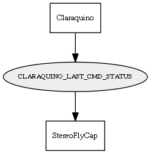

Global overview
All modules
All variables
All commands
Mission files
Pipelines
Variable: CLARAQUINO_LAST_CMD_STATUS
Variable info:
Variable name
Short description
Who publishes it?
Who subscribes to it?
CLARAQUINO_LAST_CMD_STATUS
The last command sent out to the board. Can be used to monitor whether the module is up and responding.
Claraquino
StereoFlyCap
Variable graph:

Detailed description:
The last command sent out to the board. Can be used to monitor whether the module is up and responding.
Page generated by
Mooxygen 1.1.0
at Thu Jan 22 11:30:21 2015